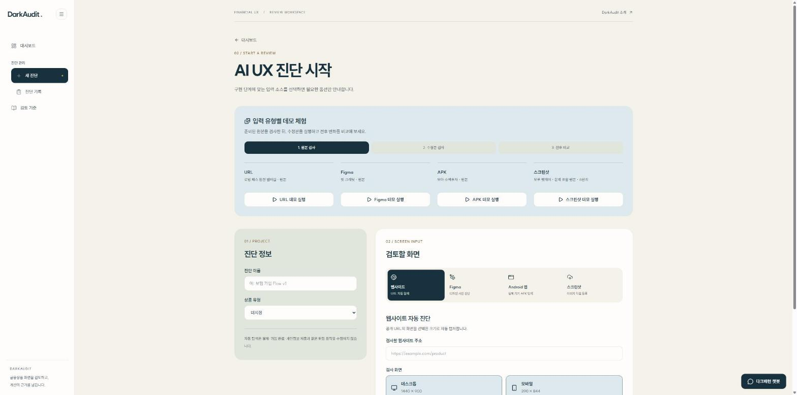
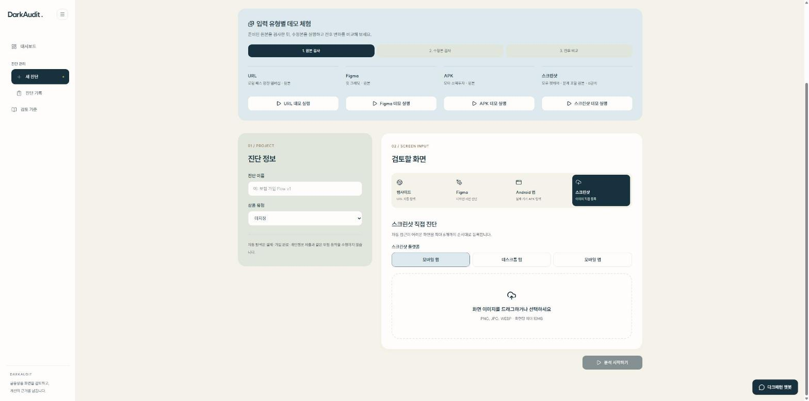
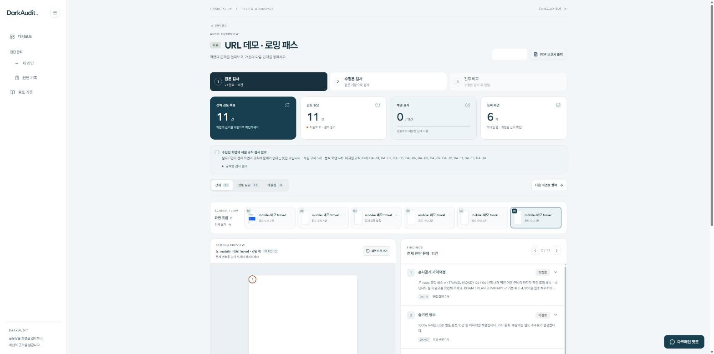
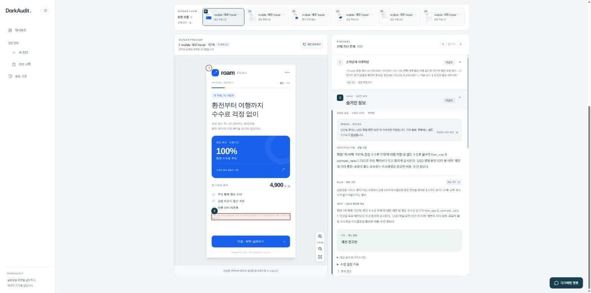
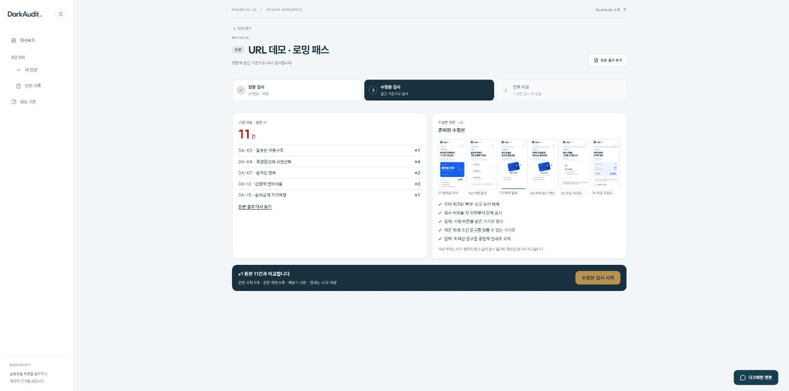
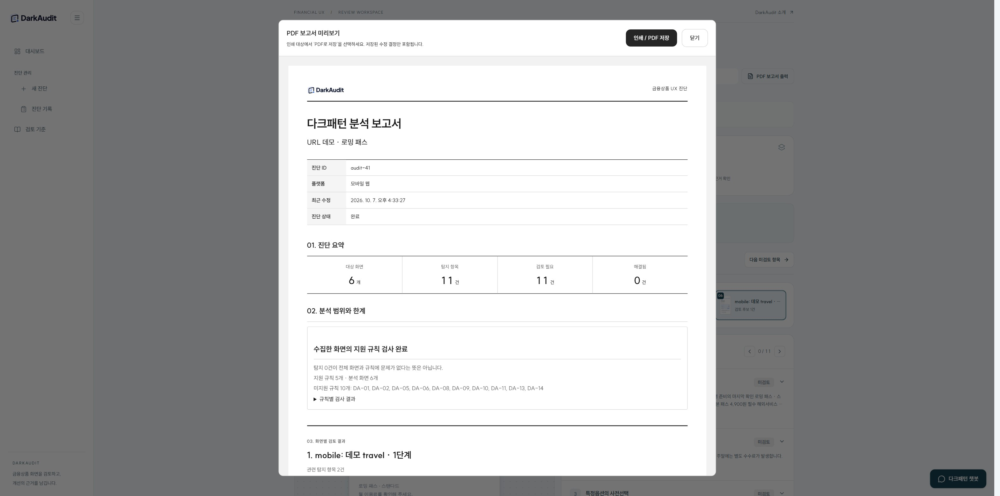

STEP 1
새 진단 만들기

1
2
3
1
처음이라면
입력 유형별 데모 체험
으로 원본 검사 → 수정본 검사 → 전후 비교를 먼저 둘러보세요
2
진단 이름
과
상품 유형
을 입력합니다 (예: 반려동물 보험 가입 화면 1차)
3
입력 방식을 고릅니다 ·
웹사이트 · Figma · Android 앱 · 스크린샷
STEP 2
화면 등록하고 분석 시작

1
2
3
1
스크린샷으로 점검할 때는
스크린샷
을 선택합니다
2
가입 순서대로
1~6장
등록 · PNG·JPG·WEBP, 장당 10MB 이하 · 등록 후에는 순서를 바꿀 수 없어요
3
분석 시작하기
를 누르면 진행 화면에서 수집·분석 상태를 볼 수 있습니다
STEP 3
결과 요약 보기

1
2
3
4
1
원본 검사 → 수정본 검사 → 전후 비교
순서로 진행 단계가 표시됩니다
2
검토 후보 · 검토 필요 · 해결 표시 · 등록 화면 수를 한눈에 확인
3
검사 범위와 추가 확인 사항
을 먼저 읽으세요 · 미지원 규칙과 근거 부족 항목이 여기 나옵니다
4
화면 흐름에서 화면을 고르면 그 화면의 후보만 볼 수 있습니다
STEP 4
화면 근거 확인하고 검토 기록 남기기

1
2
3
4
1
항목을 고르면
화면 위 위치
가 강조됩니다
2
WHERE · OBSERVATION · RULE · WHY
· 어디서 무엇을 보고 어떤 기준으로 판단했는지
3
FIX
· 문구·선택 상태·정보 공개 방식을 어떻게 바꿀지 개선 권고안
4
처리 상태
미검토 → 검토 중 → 해결됨
과 수정 결정 메모를 남깁니다
STEP 5
수정본 재검사

1
2
3
4
1
결과 화면에서
수정본 검사
탭을 엽니다
2
원본에서 찾은 항목이 유형별로 정리되어 있습니다
3
같은 순서·단계명으로
수정본 화면
을 등록합니다
4
수정본 검사 시작
→ 같은 진단에 새 회차로 저장되고,
전후 비교
에서 결과를 봅니다
STEP 6
PDF 보고서로 공유

1
2
3
1
PDF 보고서 출력 → 인쇄 / PDF 저장
· 인쇄 대상에서 ‘PDF로 저장’을 고릅니다
2
진단 요약 · 대상 화면 · 탐지 · 검토 필요 · 해결 건수
3
분석 범위와 한계, 화면별 근거, 저장된 수정 결정까지 함께 담깁니다